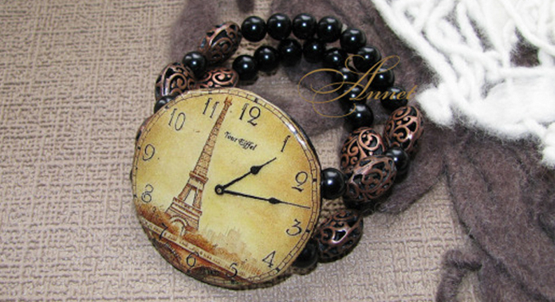
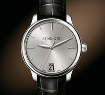
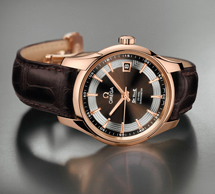
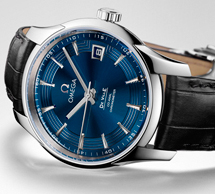

Наручные женские часы не только необходимость знания времени, но и элемент имиджа, предмет гордости, и украше ние! Для женщин стало престижно иметь не одни часы, а несколько. Они ведь, несомненно, должны сочетаться с Ва- шим нарядом. Сплошная элегантность и роскошь, браслет и корпус инкрустированы стразами, застежка простая.
Они ведь, несомненно, должны сочетаться с Вашим нарядом. Сплошная элегантность и роскошь, браслет и корпус инк рустированы стразами, застежка проста, удобна в применении.
Заголовок Н3Наручные женские часы не только необходимость знания времени, но и элемент имиджа, предмет гордости, и украше ние! Для женщин стало престижно иметь не одни часы, а несколько. Они ведь, несомненно, должны сочетаться с Ва- шим нарядом. Сплошная элегантность и роскошь, браслет и корпус инкрустированы стразами, застежка простая.
ЗАГОЛОВОК H4
  Часы должны сочетаться с Вашим нарядом. Сплошная элегантность и роскошь, браслет и корпус инкрустированы стра зами, застежка простая:
- Модные женские часы в 2013 году;
- Самый модный цвет 2013 года;
- Часы женские с керамикой;
Наручные женские часы не только необходимость знания времени, но и элемент имиджа, предмет гордости, и украше ние! Для женщин стало престижно иметь не одни часы, а несколько.
ТАБЛИЦА
| Время | Тестовое название | Название1 | Название2 | |
|---|---|---|---|---|
| 9:40 | Тестовое название1 | колличество 1 | стоимость 1 | тестовая ссылка |
| 11:20 | Тестовое название2 | колличество 2 | стоимость 2 | тестовая ссылка |
| 9:40 | Тестовое название3 | колличество 3 | стоимость 3 | тестовая ссылка |
ТАБЫ
Тестовый текст в первом табе. Наручные женские часы не только необходимость знания времени, но и элемент имид жа, предмет гордости, и украшение! Для женщин стало престижно иметь не одни часы, а несколько. Они ведь, несом ненно, должны сочетаться с Вашим нарядом. Сплошная элегантность и роскошь, браслет, корпус инкрустированы стра зами, застежка простая.